Sensor calibration ◆ mm-wave radar ◆ STARS Lab, University of Toronto, 2023 → re-run 2026
Two Doppler radars on the same vehicle each measure their own velocity from the static world. From the two velocity streams alone they can tell how they are rotated with respect to each other and along which line they sit: no reflectors, no shared field of view, no third sensor. The IEEE AIM 2023 paper was re-implemented from scratch in Python, its simulations re-run, and the Endeavour shuttle-bus experiment repeated from the raw bags. What matched, and what did not, is reported below.
Fifteen seconds: a vehicle drives through a field of scatterers, each radar turns its Doppler returns into an ego-velocity, and one batch problem snaps the second radar's frame into place. The full demo (63 s) walks through the simulations and the real data.
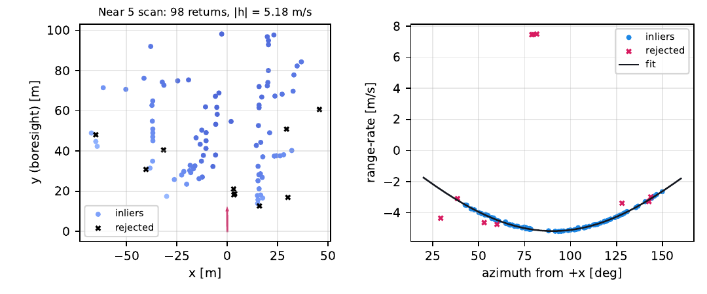
A static target at azimuth θ has range-rate −[cos θ, sin θ]·h. Fifty-odd returns per scan, a two-point RANSAC to drop moving cars and multipath, then linear least squares with a covariance. One velocity vector per radar per scan.
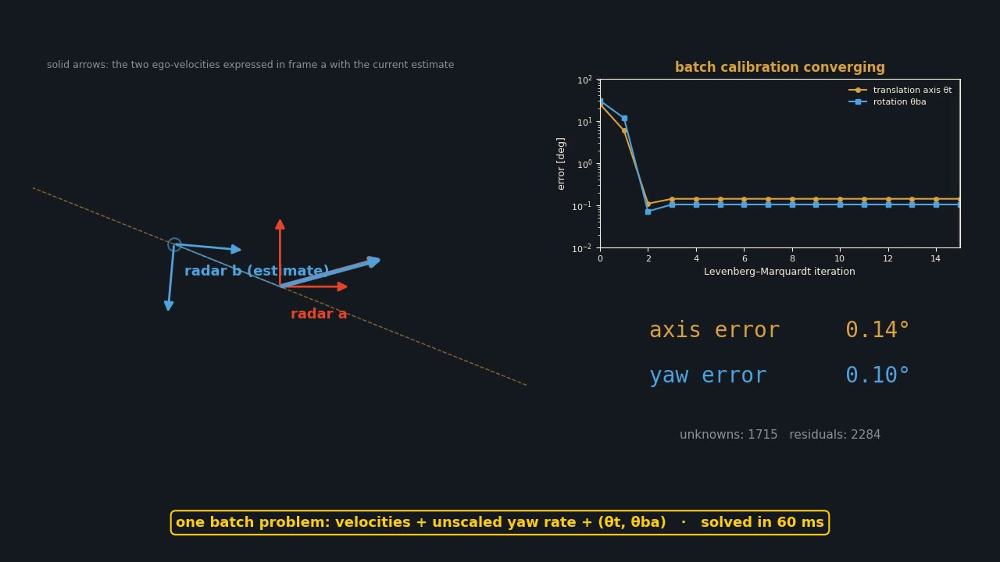
hb = R(θba)(ωγ u⊥ + va). Only the yaw and the translation axis are identifiable, since a yaw rate and a baseline scale trade off. Levenberg–Marquardt over every velocity and yaw rate plus the two angles, from a closed-form start.
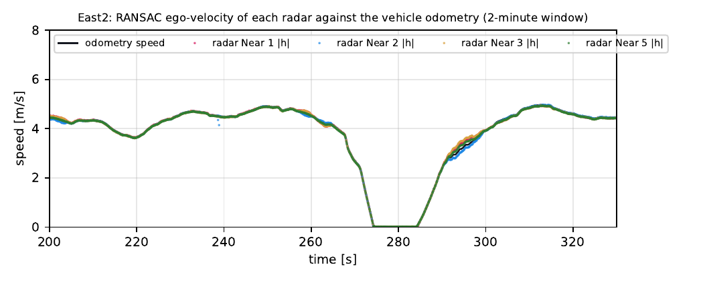
The Endeavour dataset: five Continental ARS430 radars around a bus, six runs of 4–12 minutes. Calibrate on East 2, check on the other five runs. Two of the three available pairs land within 0.01 rad of the paper; the third is weakly identifiable, and says so.
A radar cannot see its own rotation, but it can see its own velocity: every static scatterer returns a range-rate equal to minus the projection of the ego-velocity on its line of sight. Two radars rigidly mounted on a body see two velocities of the same body at two different points, and the difference between them is the lever-arm term ω × t. In the plane that term always points along the perpendicular of the translation, so the batch model is
with ωγ = ω |t| the unscaled yaw rate. Scaling the yaw rate up and the baseline down leaves the data unchanged, so the paper fixes |t| = 1 and estimates the axis θt ∈ [0, π) and the yaw θba, which are exactly the two parameters that drift in service and are hardest to measure by hand. The cost is the weighted sum of both residuals over every time step (paper eq. 12).
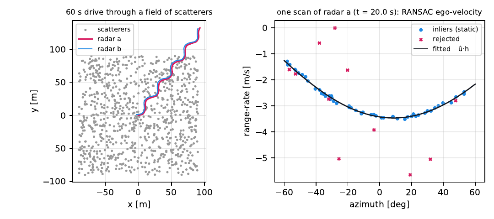
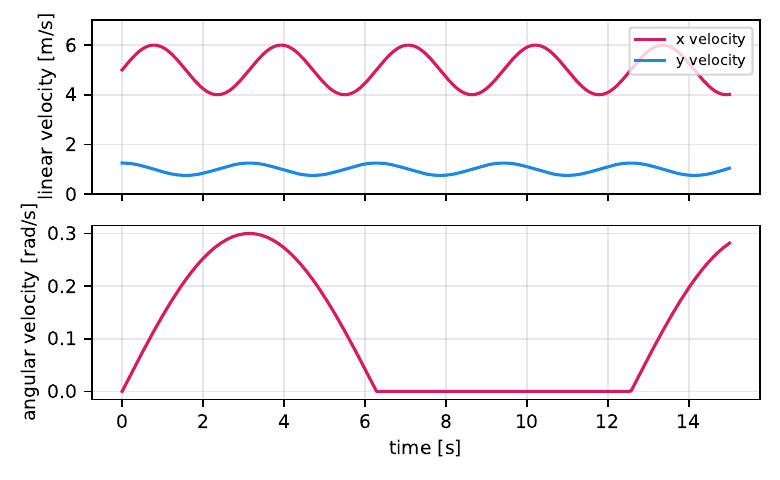
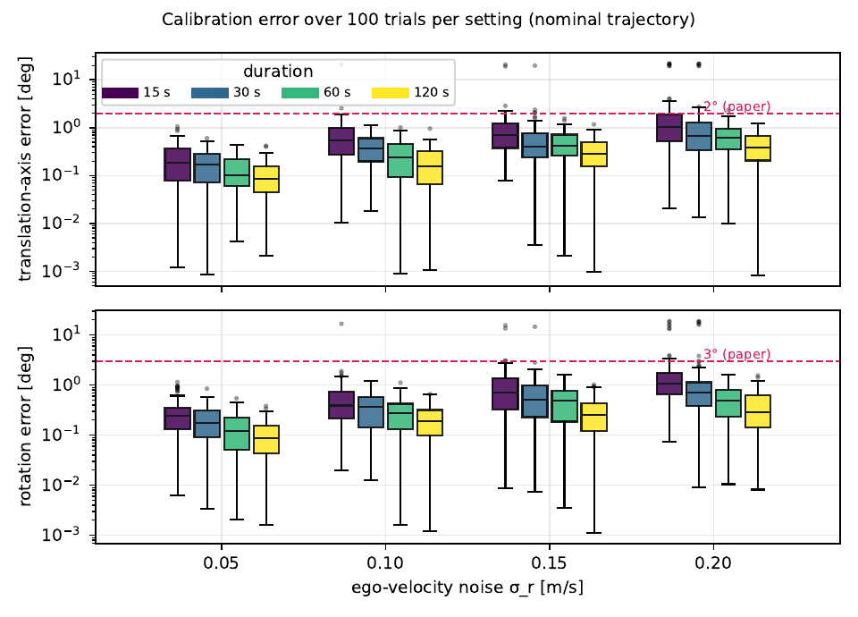
| σr [m/s] | T [s] | θt med | θt p95 | θba med | θba p95 | in 2°/3° |
|---|---|---|---|---|---|---|
| 0.05 | 15 | 0.19 | 0.61 | 0.24 | 0.88 | 100 % |
| 0.05 | 120 | 0.08 | 0.27 | 0.09 | 0.26 | 100 % |
| 0.10 | 15 | 0.54 | 1.67 | 0.39 | 1.49 | 98 % |
| 0.10 | 120 | 0.16 | 0.45 | 0.19 | 0.61 | 100 % |
| 0.20 | 15 | 1.05 | 19.5 | 1.08 | 13.4 | 76 % |
| 0.20 | 60 | 0.63 | 1.50 | 0.50 | 1.28 | 99 % |
| 0.20 | 120 | 0.38 | 1.02 | 0.28 | 1.07 | 100 % |
Errors in degrees. All sixteen settings are in the report; the reported 1σ tracks the empirical spread.
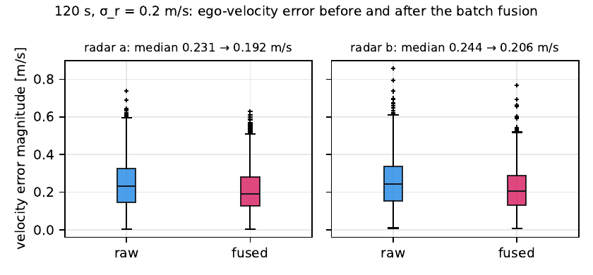
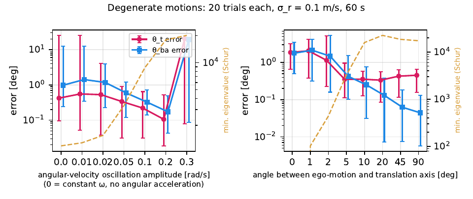
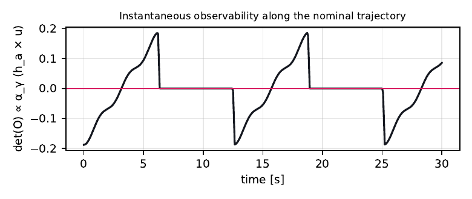
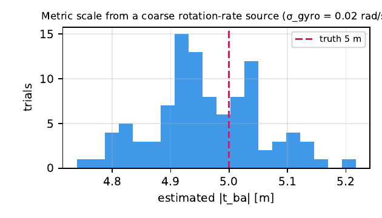
The Xi'an Jiaotong "Endeavour" shuttle bus carries five ARS430 radars (front, and two on each side) sampled at 13 Hz, plus an RTK-corrected odometry. Six loops of 4–12 minutes. The archived raw bags were converted to point clouds twice, and the two conversions do not agree: in the July-2022 set the azimuth is mirrored and offset by 3.3°, and the ego-velocities computed from it over-read the odometry speed by 7 % on the side radars but only 2.6 % on the front one. With such a between-radar bias the batch problem prefers a degenerate answer. The September-2022 set has consistent azimuths, speed ratios of 0.995–0.999 on every radar, and is what everything below uses. It lacks radar Near 4, so three of the paper's four pairs could be re-run.
Pipeline: returns beyond 1 m with |ṙ| < 10 m/s → RANSAC at 0.1 m/s (the paper's 0.025 m/s only passes 5–30 % of these scans; the ARS430 spread is 0.05-class) → interpolate radar b onto radar a's clock → drop pairs slower than 0.05 m/s → batch calibration with per-scan covariances, about 6,470 pairs each.
| pair (a = Near 5) | dataset θt | dataset θba | paper θt | paper θba | re-run θt | re-run θba |
|---|---|---|---|---|---|---|
| Near 1 (rear, 5.7 m) | 1.71 | −1.57 | 1.74 | −1.58 | 1.754 | −1.583 |
| Near 2 (rear, 5.8 m) | 1.44 | 1.59 | 1.41 | 1.61 | 1.409 | 1.615 |
| Near 3 (front side, 0.8 m) | 2.73 | −1.58 | 2.79 | −1.58 | 3.134 | −1.573 |
Radians, in the paper's convention (its rotation matrix is the transpose of the one used here, so the sign of θba is flipped in the code). Reported 1σ: 0.05° on the axis, 0.02° on the yaw.
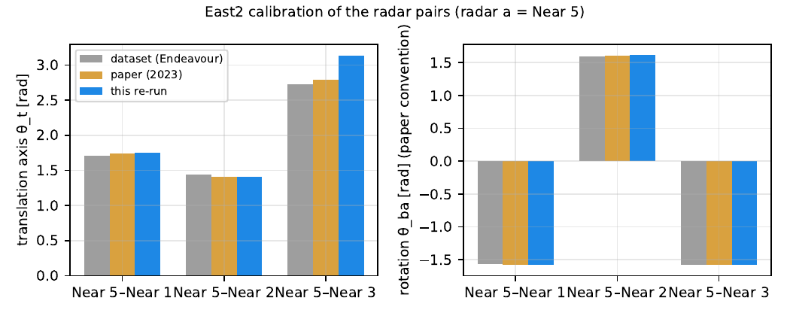
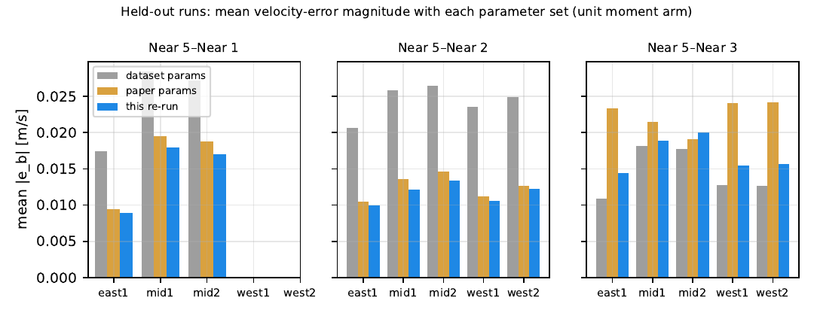
Three things that are not in the paper and that anyone re-using the method or the dataset should know.
The per-time yaw rate ωγj is a free variable, so the model can absorb any residual along the perpendicular of the translation axis. If the two radars' speeds disagree by a few percent, the cheapest explanation is a wrong yaw plus an axis chosen so that its perpendicular soaks up the difference: on the mirrored July-2022 bags every pair converged to θt ≈ 93° with the yaw 25–30° off, at a lower cost than the truth. The cure was the data, not the solver; the diagnostic is the odometry speed ratio, which should be 1.00 on every radar.
The information about the axis scales with |ω| |t|. For the two rear radars that signal is up to 1.7 m/s; for the front-side pair it is 0.25 m/s at most, the same size as the ego-velocity noise. The solver still converges from both the automatic and the dataset-based start to one crisp answer with a 0.06° reported sigma, and that answer is 23° from the dataset's. The covariance is exact for the model; the model is not the whole story when the excitation is that small. A prior on the axis, or a longer run with more turning, is the fix.
Starting the batch solver 38° / 45° away from the truth lands in a spurious minimum 63° / 60° away with 30× the cost; starting 25° / 30° away converges in four iterations. The closed-form initialisation is inside that basin in every 60-s run and in 76–98 % of the 15-s runs at the highest noise, which is where the 20° outliers of the simulation sweep come from. Whenever the yaw rate changes sign with a small amplitude the initialiser also fails, while the batch problem itself is fine from a better start.
63 s: the scatterer simulation with both radars' returns and ego-velocity streams, the batch problem converging from a deliberately wrong start, the simulation sweep and the degeneracy check, the Endeavour ego-velocities against odometry with the calibration read-out, and the held-out evaluation.
The re-implementation is an installable package, r2rcal, with a pytest suite and a harness that regenerates every figure, table, the report and both videos from scratch (numpy, scipy, matplotlib, the pure-Python rosbags reader; ffmpeg for the videos). The Endeavour bags are not redistributed; the report says which conversion to use.
Credits
Paper. Qilong Cheng, Emmett Wise (equal contribution) and Jonathan Kelly, Space & Terrestrial Autonomous Robotic Systems Laboratory, University of Toronto Institute for Aerospace Studies. IEEE/ASME AIM 2023.
Data. Endeavour Radar Dataset, Institute of Artificial Intelligence and Robotics, Xi'an Jiaotong University (five ARS430 radars, RTK/INS odometry).
2026 re-run. Python re-implementation, simulation and scatterer studies, the Endeavour re-run from the raw bags, the report, the videos and this page. The original MATLAB solver and ego-velocity tools were consulted for the trajectory generator and the dataset conventions.